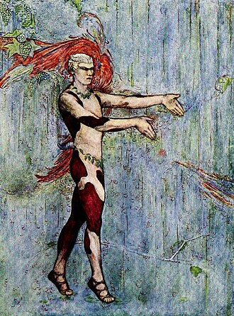

¿Qué fue?
La música impresionista es la tendencia musical que surgió en Francia a finales del siglo XIX. El nombre impresionismo ya se usaba antes para denominar a la pintura de los años 1860 - 1870, ya que las características de ambas artes eran muy similares. Los dos únicos autores a los que podemos llamar impresionistas en aquella época son Claude Debussy y Déodat de Séverac, aunque este último no está tan reconocido como gran parte de autores posteriores. Sin embargo, Claude Debussy es el autor impresionista más notorio, junto con los también franceses Maurice Ravel y Erik Satie.[cita requerida] Al igual que el impresionismo pictórico y literario, el impresionismo musical intenta representar la fugaz impresión de un momento. A diferencia del estilo clásico-romántico vienés, en el cual se valora ante todo la proporción y el equilibrio formal, en la música impresionista los compositores buscan plasmar una imagen sonora. Similar a una imagen en la pintura impresionista, esta imagen sonora tiene la tarea de transmitir el estado de ánimo y la atmósfera de un momento al oyente, por lo que están en juego impresiones subjetivas y no propiedades materiales concretas. El desarrollo y procesamiento posterior de estas imágenes de sonido crea una imagen general borrosa en la que normalmente no se pueden distinguir formas sólidas. La característica más destacada en el Impresionismo musical es el uso del "color", o en términos musicales, timbre, que se puede conseguir a través de la orquestación, el uso armónico, la textura, etc.[1] Otros elementos del Impresionismo musical también implican nuevas combinaciones de acordes, tonalidad ambigua, armonías extendidas, uso de modos y escalas exóticas, movimiento paralelo, extra-musicalidad, y títulos evocadores como "Reflets dans l'eau" ("Reflejos en el agua"), "Brouillards" ("Brumas"), etc.[2]
Inicios del impresionismo
La música occidental ya estaba sistematizada en la Antigua Grecia, donde se usaban aproximadamente 7 escalas. Estas escalas pasaron de Grecia a Roma y sucesivamente a la Iglesia católica. Estas eran frecuentemente utilizadas en el canto llano y en la música medieval. Pero al llegar el período barroco, solo se conservaron dos de estas escalas (con sus respectivas variaciones): la escala mayor (o jónica) y la menor (o eólica). Pero los años pasaron, y al llegar el posromanticismo, autores como Gabriel Fauré o Camille Saint-Saëns experimentaron con estas escalas y con el timbre (aspecto que más tarde sería esencial en el impresionismo) de una manera pionera, pero sin profundizar demasiado. A finales del siglo XIX, la vanguardia y el progreso nunca habían tenido tanta repercusión, tanto en política y en sociedad como en el ámbito artístico. En música, como en pintura, surgió el impresionismo, la libertad absoluta armónica y rítmicamente (respetando unos parámetros previamente fijados, pero manipulables en cualquier momento) y la experimentación fueron las dos características principales de este movimiento. Sin duda, Claude Debussy es en gran parte el creador, y autor por excelencia del impresionismo, y Francia la cuna de este gran movimiento vanguardista.
Aspectos del impresionismo
El impresionismo, tanto en música como en otras artes, surge a partir de la idea de expresar las ideas de una manera en cierto modo insinuada. De cerca se ven manchas y de lejos crea una figura por decirlo así. Por ejemplo, en la primera fotografía, se puede observar el Parlamento británico retratado de un modo en el que apenas se puede intuir su forma. Aspectos de la música del impresionismo Duración: 2 minutos y 27 segundos. Syrinx de Claude Debussy. Un tempo más libre, y con capacidad de un rubato a gusto del intérprete (siempre respetando las indicaciones del autor). Utilización de los modos, introduciendo numerosas variaciones de cada uno, e incluso inventándolos (como en la obra Syrinx para solo de flauta, de Claude Debussy). No sólo se utilizan modos clásicos, ya que también es muy frecuente encontrar escalas propias de diferentes etnias (Como en el tercer movimiento de Ma mère l'oye de Maurice Ravel, Laideronnette, l'impératrice des Pagodes). Experimentar con el timbre, convirtiendo a este en el factor más importante de la música impresionista. De esta manera, se conseguían efectos nunca vistos antes en la música. El preludio de Claude Debussy La Cathédrale Engloutie es un claro ejemplo de los diferentes timbres y sensaciones que pueden escucharse en una misma obra, interpretado aquí por Maurizio Pollini. Autores como Maurice Ravel o Camille Saint-Saëns se atrevieron a experimentar con la música de su época, y a crear algo diferente a las obras de entonces. Pero fue Claude Debussy el primero en crear una música totalmente diferente a la anterior, y nunca antes escuchada.